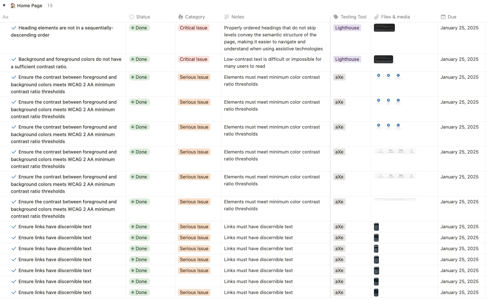
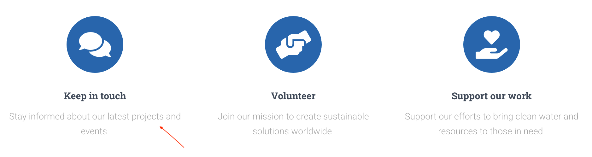
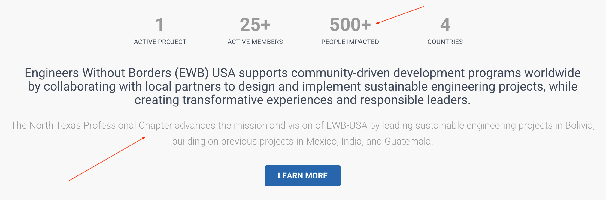
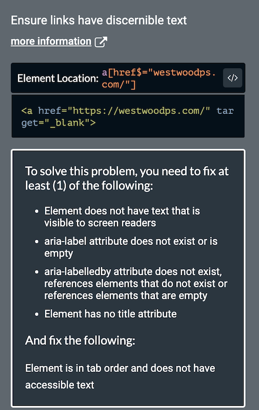
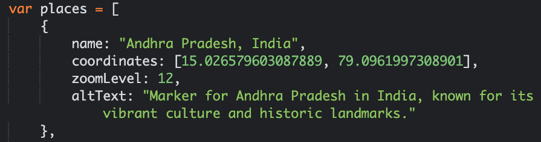

Engineers Without Borders USA (EWB-USA) is a
national non-profit, 501(c)(3) tax-exempt organization
dedicated to creating a world where every community has the capacity
to sustainably meet its basic human needs.
I serve as Webmaster on the leadership team for the
North Texas Professional
Chapter.
EWB-North Texas Website Redesign & Accessibility Audit
OVERVIEW
(2024 - 2025)
I am redesigning the website to enhance
the user experience and simplify navigation, ensuring visitors and
sponsors can easily find information. Throughout the process, I am
prioritizing accessibility best practices to create an inclusive
digital experience.
Accessibility Audits
Below are the results of audits conducted on the EWB Homepage and the Projects page using aXe DevTools and Lighthouse, prior to implementing changes. These tools identified accessibility issues related to design, typography, heading structure, contrast, and more. Manual testing for color contrast was also performed to ensure compliance with accessibility standards, to address any potential issues not caught by automated tools. My testing has focused on resolving serious, critical, moderate, and minor issues within the scope of design and content updates.
HOMEPAGE
PROJECTS PAGE

Before the Redesign
To provide a visual reference, here is what the site design looked like before the redesign.
Press and hold on mobile, hover on desktop üòä
Accessibility Improvements
I am maintaining a detailed log of all accessibility issues I am actively working to remediate across the site. You can view the EWB North Texas accessibility audit log on Notion.
Challenges
- Pre-built WordPress Theme: The restrictive nature of working with a pre-built WordPress theme has posed some challenges for customization
- Branding Guidelines: Balancing accessibility improvements with the National Organization's branding guidelines, including specific color palettes and design requirements
Audit Results
Below are the results of the Homepage and Projects page accessibility audits, showcasing improvements before and after implementing fixes:
HOMEPAGE
Color-contrast: Elements must meet minimum color contrast ratio thresholds - (Serious Impact)
Manual testing was conducted using a browser color picker tool to identify the hex codes of the foreground and background colors of text elements. These hex codes were entered in a Color Contrast Analyzer to evaluate the sufficiency of the text color contrast.
Before:
Element has insufficient color contrast of 2.46 (foreground color: #a5a5a5, background color: #ffffff). Expected contrast ratio of 4.5:1
Element has insufficient color contrast of 2.68 (foreground color: #999999, background color: #f8f8f8). Expected contrast ratio of 4.5:1
After:
A Color Contrast Analyzer was used to evaluate and select a sufficient text color that complies with accessibility guidelines, ensuring that the contrast ratio meets the required standards for readability.
Link-name: Links must have discernible text - (Serious Impact)
All links that contain logos or images were assigned alt attributes to provide meaningful and accessible text descriptions for users who rely on screen readers or have images disabled in their browsers.
Before:
After:
By adding alt text to images and logos inside links, we make sure that everyone can understand the link's purpose, even if they cannot see the image.
Homepage Accessibility Audit: Post-Fixes:
Audit Results Continued
PROJECTS PAGE
Target-size: All touch targets must be 24px large, or leave sufficient space - (Serious Impact)
Interactive elements, such as buttons, links, and map markers, should be easily tappable on touchscreens. Adequate spacing between map markers is essential to enhance usability, especially for users with motor impairments or those navigating on smaller devices.
Changes made:
- Custom Icon Size: By defining a custom icon with iconSize: [32, 42], the markers are now large enough to meet accessibility requirements
- Anchor Points: iconAnchor ensures the marker is positioned correctly relative to its coordinates, and popupAnchor aligns the popup above the marker
Each marker location now also includes alt text to ensure accessibility and provide clear, descriptive context for screen reader users.
Color-contrast: Elements must meet minimum color contrast ratio thresholds - (Serious Impact)
The current text color #B36924 on a white background does not meet the minimum contrast ratio requirements of WCAG 2.1 or 2.2 standards for small text. This may cause readability challenges for users with visual impairments, particularly those with low vision or color blindness.
To address this, the text color was adjusted to #88481B, a slightly darker shade of orange that closely aligns with the branding guidelines. This updated color meets the WCAG 2.1 AA and AAA standards for all text sizes, UI components, and graphical objects. The change ensures a visually accessible experience for all users while maintaining brand consistency.
Before:
After:
Projects page Accessibility Audit: Post-Fixes:
Conclusion
Additional manual testing will be conducted to ensure that all accessibility issues are fully resolved and the site delivers an inclusive experience for everyone. Continuous testing will be done to maintain compliance and tackle any new issues that might come up during future updates or content changes.